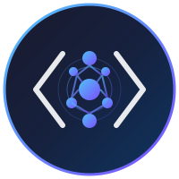

<!DOCTYPE html>
<html lang="en">
  <head>
    <title>CS 7180 Vibe Coding - AI-Assisted Software Engineering | Northeastern University Oakland, Spring 2026</title>
    <meta charset="utf-8">
    <meta name="description" content="CS 7180 Vibe Coding: Master AI-assisted development for Silicon Valley. Learn Claude, Antigravity, prompt engineering, TDD, and build portfolio-worthy applications.">
    <meta name="viewport" content="width=device-width, initial-scale=1, shrink-to-fit=no">
    <meta name="author" content="John Alexis Guerra Gómez">
    <link rel="icon" type="image/png" href="../../favicon.png">
    <link rel="apple-touch-icon" href="../../favicon.png">
    <meta property="og:type" content="website">
    <meta property="og:url" content="https://johnguerra.co/classes/aiCoding_spring_2026/">
    <meta property="og:title" content="CS 7180 Vibe Coding - AI-Assisted Software Engineering">
    <meta property="og:description" content="Master AI-assisted development for Silicon Valley. Learn Claude, Antigravity, prompt engineering, TDD, and build portfolio-worthy applications at Northeastern University Oakland.">
    <meta property="og:image" content="https://johnguerra.co/classes/aiCoding_spring_2026/logo.svg">
    <meta name="twitter:card" content="summary_large_image">
    <meta name="twitter:url" content="https://johnguerra.co/classes/aiCoding_spring_2026/">
    <meta name="twitter:title" content="CS 7180 Vibe Coding - AI-Assisted Software Engineering">
    <meta name="twitter:description" content="Master AI-assisted development for Silicon Valley. Learn Claude, Antigravity, prompt engineering, TDD, and build portfolio-worthy applications at Northeastern University Oakland.">
    <meta name="twitter:image" content="https://johnguerra.co/classes/aiCoding_spring_2026/logo.svg">
    <link href="https://cdn.jsdelivr.net/npm/bootstrap@5.3.3/dist/css/bootstrap.min.css" rel="stylesheet" integrity="sha384-QWTKZyjpPEjISv5WaRU9OFeRpok6YctnYmDr5pNlyT2bRjXh0JMhjY6hW+ALEwIH" crossorigin="anonymous">
    <link href="styles.css" rel="stylesheet">
  </head>
</html>
<body>
  <div class="wip-banner"><strong>Work in Progress</strong> — This page is under development. Details may change and the weekly schedule is tentative.</div>
  <div class="hero">
    <div class="container">
      <div class="row align-items-center">
        <div class="col-md-8">
          <div class="d-flex align-items-center mb-2">
            <h1 class="mb-0">CS 7180: Vibe Coding</h1>
          </div>
          <p class="tagline">AI-Assisted Software Engineering</p>
          <p class="lead">Master AI-assisted development for Silicon Valley. Build production apps with AI—the right way.</p>
          <div class="mt-3"><span class="badge bg-light text-dark me-2">Spring 2026</span><span class="badge bg-light text-dark me-2">Tue/Thu 3:00-4:40 PM PST</span><span class="badge bg-light text-dark me-2">Lucie Stern 27, Oakland</span><span class="badge bg-warning text-dark">Hybrid: In-Person + Zoom</span></div>
        </div>
        <div class="col-md-4 text-center"></div>
      </div>
    </div>
  </div>
  <div class="container">
    <nav class="nav nav-pills mb-4 justify-content-center"><a class="nav-link" href="#timeline-section">Timeline</a><a class="nav-link" href="#schedule">Schedule</a><a class="nav-link" href="#readings">Readings</a><a class="nav-link" href="#projects">Projects</a><a class="nav-link" href="#showcase">Showcase</a><a class="nav-link" href="#grading">Grading</a></nav>
    <div class="row mb-4">
      <div class="col-lg-8">
        <h3>Course Overview</h3>
        <p>This course trains master's level computer science students to become Silicon Valley-ready software engineers in the age of AI. Students will master AI-assisted development tools while maintaining professional engineering standards, learning to build high-quality, production-ready full-stack applications.</p>
        <p>Building successful software with AI requires more than good prompting—it demands understanding how Large Language Models work, when to use which tools, how to evaluate AI-generated code systematically, and how to integrate AI into professional development workflows.</p>
        <div class="alert alert-info mt-3"><strong>Hybrid Format:</strong> This course is offered in-person at Oakland Campus and via Zoom for remote students. The instructor has extensive experience teaching remotely, ensuring a great experience for all students regardless of location.</div>
        <h4 class="mt-4">Why This Course?</h4>
        <div class="row">
          <div class="col-md-6">
            <ul>
              <li><strong>Industry-Relevant</strong>: Tools and practices used in top tech companies</li>
              <li><strong>Portfolio-Focused</strong>: Build 3 prototype applications for your portfolio</li>
              <li><strong>Comprehensive</strong>: LLM fundamentals, prompt engineering, evals, TDD, CI/CD</li>
            </ul>
          </div>
          <div class="col-md-6">
            <ul>
              <li><strong>Balanced</strong>: Learn AI-assisted coding AND prove you can code without AI</li>
              <li><strong>Future-Proof</strong>: Master the workflow, not just current tools</li>
            </ul>
          </div>
        </div>
      </div>
      <div class="col-lg-4">
        <div class="card">
          <div class="card-body">
            <h5 class="card-title">Instructor</h5>
            <p class="mb-1"><a href="https://johnguerra.co">John Alexis Guerra Gómez</a></p>
            <p class="mb-1"><small><a id="email-link" href="#">[Enable JavaScript to see email]</a></small></p>
            <hr>
            <p class="mb-1"><strong>Office Hours</strong></p>
            <p class="mb-0">By appointment via Slack</p>
          </div>
        </div>
      </div>
    </div>
    <div class="row mb-4">
      <div class="col-12">
        <h3>The Three AI Modalities</h3>
        <p>Students will master three distinct AI coding paradigms:</p>
      </div>
      <div class="col-md-4">
        <div class="modality-card modality-claude-web">
          <h5>Modality 1: Claude Web</h5>
          <p class="small mb-1"><strong>Best for:</strong> Architecture planning, learning, complex problem-solving</p>
          <p class="small mb-0"><strong>Skills:</strong> Claude Projects, artifacts, conversational iteration</p>
        </div>
      </div>
      <div class="col-md-4">
        <div class="modality-card modality-antigravity">
          <h5>Modality 2: Antigravity</h5>
          <p class="small mb-1"><strong>Best for:</strong> Professional development, production code, daily workflow</p>
          <p class="small mb-0"><strong>Skills:</strong> Tab autocomplete, Composer, .antigravityrules, YOLO mode</p>
        </div>
      </div>
      <div class="col-md-4">
        <div class="modality-card modality-claude-code">
          <h5>Modality 3: Claude Code</h5>
          <p class="small mb-1"><strong>Best for:</strong> Automation, multi-file refactoring, DevOps</p>
          <p class="small mb-0"><strong>Skills:</strong> Terminal workflows, autonomous agents, script automation</p>
        </div>
      </div>
    </div>
    <div class="row mb-4" id="projects">
      <div class="col-12">
        <h3>Portfolio Projects</h3>
        <p class="text-muted">All projects are open topic—you choose what to build after getting instructor approval.</p>
      </div>
      <div class="col-md-4">
        <div class="project-card project-p1">
          <h5>Project 1: Personal Utility App</h5>
          <p class="small">Build a personal utility application that solves a real problem validated through Mom Test interviews.</p>
          <ul class="small">
            <li>5+ user stories with CRUD operations</li>
            <li>Basic test suite (50%+ coverage)</li>
            <li>GitHub Actions CI pipeline</li>
            <li>Deployed and publicly accessible</li>
          </ul><span class="badge" style="background-color: var(--color-green)">13% of grade</span><span class="badge ms-1" style="background-color: var(--color-green-light); color: #333">Due Week 6</span>
        </div>
      </div>
      <div class="col-md-4">
        <div class="project-card project-p2">
          <h5>Project 2: Full-Stack Application</h5>
          <p class="small">Complete full-stack application using multiple AI modalities, Agile practices, TDD, and production-grade CI/CD.</p>
          <ul class="small">
            <li>User authentication (JWT/OAuth)</li>
            <li>Test-Driven Development (80%+ coverage)</li>
            <li>Comprehensive evaluation suite</li>
            <li>2 documented Agile sprints</li>
          </ul><span class="badge" style="background-color: var(--color-purple)">18% of grade</span><span class="badge ms-1" style="background-color: var(--color-purple-light); color: #333">Due Week 10</span>
        </div>
      </div>
      <div class="col-md-4">
        <div class="project-card project-p3">
          <h5>Project 3: Production App with Claude Code Mastery</h5>
          <p class="small">Pair project: deploy a production-grade app demonstrating mastery of Claude Code extensibility (W10-W14).</p>
          <ul class="small">
            <li>CLAUDE.md, skills, hooks, MCP, agents</li>
            <li>TDD + CI/CD with AI PR review</li>
            <li>Vercel deployment + Sentry monitoring</li>
            <li>Blog post + screencast + live demo</li>
          </ul><span class="badge" style="background-color: var(--color-orange)">19% of grade</span><span class="badge ms-1" style="background-color: var(--color-orange-light); color: #333">Due Week 15</span>
        </div>
      </div>
    </div>
    <div class="row mb-4" id="showcase">
      <div class="col-12">
        <h3>Project Showcase</h3>
        <p class="text-muted">Student projects from this semester. Submit yours via the Google Form on Canvas.</p>
        <div class="row g-3" id="showcase-container"></div>
      </div>
    </div>
    <div class="row mb-4" id="timeline-section">
      <div class="col-12">
        <h3>Interactive Timeline</h3>
        <p class="text-muted small">Navigate through the semester to see what you should be working on each week.</p>
        <div id="timeline-container"></div>
      </div>
    </div>
    <div class="row mb-4" id="schedule">
      <div class="col-md-7">
        <h3>Weekly Schedule</h3>
        <p class="small text-muted fst-italic">Schedule is tentative and subject to change.</p>
        <table class="table table-sm schedule-table">
          <thead>
            <tr>
              <th>Week</th>
              <th>Topics</th>
              <th>Slides</th>
            </tr>
          </thead>
          <tbody>
            <tr>
              <td>1</td>
              <td>Introduction</td>
              <td><a href="https://johnguerra.co/lectures/aiCoding_spring2026/01_Introduction/">Intro</a></td>
            </tr>
            <tr>
              <td>2</td>
              <td><strong>LLM Architecture & Tokenization</strong></td>
              <td><a href="https://johnguerra.co/lectures/aiCoding_spring2026/02_LLMs_fundamentals/">LLMs</a></td>
            </tr>
            <tr>
              <td>3</td>
              <td>Prompt Engineering Basics</td>
              <td><a href="https://johnguerra.co/lectures/aiCoding_spring2026/03_Prompt_Engineering/">Prompts</a></td>
            </tr>
            <tr>
              <td>4</td>
              <td><strong class="text-claude-web">Claude Web & Artifacts</strong>, <strong class="text-hw">HW1 due</strong></td>
              <td><a href="https://johnguerra.co/lectures/aiCoding_spring2026/04_User_Research_Prototyping/">Research</a></td>
            </tr>
            <tr>
              <td>5</td>
              <td><strong class="text-claude-web">Claude Web Deep Dive: Artifacts</strong>, <strong class="text-hw">HW2 due</strong></td>
              <td><a href="https://johnguerra.co/lectures/aiCoding_spring2026/05_Claude_Web_Projects/">Artifacts</a></td>
            </tr>
            <tr>
              <td>6</td>
              <td><strong class="text-project-p1">Project 1 Due</strong>, <strong class="text-antigravity">IDE-Centric AI Coding</strong>, P2 pair formation</td>
              <td><a href="https://johnguerra.co/lectures/aiCoding_spring2026/06_IDE_AI_Coding/">IDE AI</a></td>
            </tr>
            <tr>
              <td>7</td>
              <td><strong class="text-antigravity">Agile/Scrum + Pair Workflow</strong></td>
              <td><a href="https://johnguerra.co/lectures/aiCoding_spring2026/07_Advanced_IDE_Agile/">Agile+Pairs</a></td>
            </tr>
            <tr>
              <td>8</td>
              <td><strong class="text-antigravity">Advanced IDE AI Features</strong>, <strong class="text-hw">HW3 due</strong></td>
              <td><a href="https://johnguerra.co/lectures/aiCoding_spring2026/08_Advanced_IDE_Features/">IDE Advanced</a></td>
            </tr>
            <tr>
              <td>9</td>
              <td><em class="text-muted">Spring Break - No Class</em></td>
              <td></td>
            </tr>
            <tr>
              <td>10</td>
              <td><strong class="text-project-p2">Project 2 Due</strong>, <strong class="text-claude-code">Claude Code Foundations</strong>, P3 team formation</td>
              <td><a href="https://johnguerra.co/lectures/aiCoding_spring2026/10_Claude_Code_Foundations/">Claude Code Foundations</a></td>
            </tr>
            <tr>
              <td>11</td>
              <td><strong class="text-claude-code">Claude Code Workflows & TDD</strong>, <strong class="text-hw">HW4 due</strong></td>
              <td><a href="https://johnguerra.co/lectures/aiCoding_spring2026/11_Claude_Code_Workflows/">Claude Code Workflows</a></td>
            </tr>
            <tr>
              <td>12</td>
              <td><strong class="text-claude-code">Claude Code Extensibility</strong></td>
              <td><a href="https://johnguerra.co/lectures/aiCoding_spring2026/12_Claude_Code_Extensibility/">Claude Code Extensibility</a></td>
            </tr>
            <tr>
              <td>13</td>
              <td><strong class="text-claude-code">Agent Architectures & Agent SDK</strong>, <strong class="text-hw">HW5 due</strong></td>
              <td><a href="https://johnguerra.co/lectures/aiCoding_spring2026/13_Agent_Architectures/">Agent Architectures</a></td>
            </tr>
            <tr>
              <td>14</td>
              <td><strong class="text-claude-code">Emerging AI Engineering</strong></td>
              <td><a href="https://johnguerra.co/lectures/aiCoding_spring2026/14_Emerging_AI_Engineering/">Emerging AI Engineering</a></td>
            </tr>
            <tr>
              <td>15</td>
              <td><strong class="text-project-p3">Project 3 Due</strong> (no lecture)</td>
              <td></td>
            </tr>
          </tbody>
        </table>
      </div>
      <div class="col-md-5" id="grading">
        <h3>Grading</h3>
        <table class="table">
          <thead>
            <tr>
              <th>Component</th>
              <th>%</th>
            </tr>
          </thead>
          <tbody>
            <tr>
              <td>Participation</td>
              <td>15%</td>
            </tr>
            <tr>
              <td>Weekly Quizzes</td>
              <td>10%</td>
            </tr>
            <tr>
              <td>Homeworks (5 assignments)</td>
              <td>25%</td>
            </tr>
            <tr>
              <td>Projects (3 major)</td>
              <td>50%</td>
            </tr>
          </tbody>
        </table>
        <h4 class="mt-4">Key Topics</h4>
        <ul class="small">
          <li>LLM Fundamentals & Limitations</li>
          <li>Multi-Modal AI Development</li>
          <li>Prompt & Context Engineering</li>
          <li>Evaluation Systems (Evals)</li>
          <li>Test-Driven Development with AI</li>
          <li>Professional CI/CD Pipelines</li>
          <li>Agile Practices with AI</li>
          <li>Claude Code & Agent Architectures</li>
        </ul>
      </div>
    </div>
    <div class="row mb-4">
      <div class="col-12">
        <h3>Technologies & Tools</h3>
      </div>
      <div class="col-md-6">
        <h5>Tech Stack</h5>
        <div><span class="tech-badge">React / Next.js</span><span class="tech-badge">Node.js / Express</span><span class="tech-badge">PostgreSQL / MongoDB</span><span class="tech-badge">Jest / Vitest</span><span class="tech-badge">Playwright / Cypress</span><span class="tech-badge">GitHub Actions</span><span class="tech-badge">TailwindCSS</span><span class="tech-badge">TypeScript</span></div>
      </div>
      <div class="col-md-6">
        <h5>Required Tools</h5>
        <ul class="small">
          <li><strong>Antigravity</strong> (free)</li>
          <li><strong>Claude.ai account</strong> (Pro recommended, $20/month)</li>
          <li>GitHub account</li>
          <li>Node.js 18+ and npm</li>
          <li>Git</li>
        </ul>
      </div>
    </div>
    <div class="row mb-4">
      <div class="col-md-6">
        <h3>Required Books</h3>
        <ul>
          <li><strong>The Mom Test</strong> by Rob Fitzpatrick</li>
          <li><strong>Scrum</strong> by Jeff Sutherland</li>
        </ul>
        <h5 class="mt-2">Recommended</h5>
        <ul>
          <li><strong>Designing for Growth</strong> by Liedtka & Ogilvie</li>
        </ul>
      </div>
      <div class="col-md-6">
        <h3>Resources</h3>
        <ul>
          <li><a href="https://docs.anthropic.com">Anthropic Claude Docs</a></li>
          <li><a href="https://antigravity.google/docs/get-started">Antigravity Documentation</a></li>
          <li><a href="https://docs.github.com/copilot">GitHub Copilot Guide</a></li>
        </ul>
      </div>
    </div>
    <div class="row mb-4" id="readings">
      <div class="col-12">
        <h3>Required Readings & Resources</h3>
        <p class="small text-muted">Organized by week. Click to expand each section.</p>
        <div class="accordion" id="readingsAccordion">
          <div class="accordion-item">
            <h2 class="accordion-header">
              <button class="accordion-button collapsed" type="button" data-bs-toggle="collapse" data-bs-target="#week2" aria-expanded="false">Week 2: LLM Fundamentals</button>
            </h2>
            <div class="accordion-collapse collapse" id="week2" data-bs-parent="#readingsAccordion">
              <div class="accordion-body">
                <h6>Required Viewing</h6>
                <ul class="small">
                  <li><a href="https://www.3blue1brown.com/lessons/neural-networks">But what is a Neural Network?</a> (19 min) - 3Blue1Brown</li>
                  <li><a href="https://www.3blue1brown.com/lessons/gradient-descent">Gradient descent, how neural networks learn</a> (21 min) - 3Blue1Brown</li>
                  <li><a href="https://www.3blue1brown.com/lessons/attention">Attention in transformers, step-by-step</a> (27 min) - 3Blue1Brown</li>
                </ul>
                <h6>Recommended</h6>
                <ul class="small">
                  <li><a href="https://jalammar.github.io/illustrated-transformer/">The Illustrated Transformer</a> - Jay Alammar</li>
                  <li><a href="https://karpathy.ai/zero-to-hero.html">Let's build GPT: from scratch, in code</a> (1h 56m) - Andrej Karpathy</li>
                </ul>
                <h6>Interactive Tools</h6>
                <ul class="small">
                  <li><a href="https://tiktokenizer.vercel.app/">Tiktokenizer</a> - Visualize how text tokenizes</li>
                  <li><a href="https://platform.openai.com/tokenizer">OpenAI Tokenizer</a> - Official token counter</li>
                </ul>
              </div>
            </div>
          </div>
          <div class="accordion-item">
            <h2 class="accordion-header">
              <button class="accordion-button collapsed" type="button" data-bs-toggle="collapse" data-bs-target="#week3" aria-expanded="false">Week 3: Prompt Engineering</button>
            </h2>
            <div class="accordion-collapse collapse" id="week3" data-bs-parent="#readingsAccordion">
              <div class="accordion-body">
                <h6>Required</h6>
                <ul class="small">
                  <li><a href="https://platform.claude.com/docs/en/build-with-claude/prompt-engineering/claude-4-best-practices">Claude 4 Best Practices</a> - Anthropic Docs</li>
                  <li><a href="https://docs.anthropic.com/en/docs/build-with-claude/prompt-engineering/overview">Prompt Engineering Overview</a> - Anthropic Docs</li>
                  <li><a href="https://github.com/anthropics/courses/tree/master/prompt_engineering_interactive_tutorial">Prompt Engineering Interactive Tutorial</a> - Anthropic (9 chapters)</li>
                  <li><a href="https://docs.anthropic.com/en/resources/prompt-library/library">Prompt Library</a> - Anthropic</li>
                </ul>
                <h6>Recommended</h6>
                <ul class="small">
                  <li><a href="https://github.com/anthropics/courses/tree/master/real_world_prompting">Real World Prompting Course</a> - Anthropic</li>
                </ul>
              </div>
            </div>
          </div>
          <div class="accordion-item">
            <h2 class="accordion-header">
              <button class="accordion-button collapsed" type="button" data-bs-toggle="collapse" data-bs-target="#week4" aria-expanded="false">Weeks 4-5: Claude Web & Artifacts</button>
            </h2>
            <div class="accordion-collapse collapse" id="week4" data-bs-parent="#readingsAccordion">
              <div class="accordion-body">
                <h6>Required</h6>
                <ul class="small">
                  <li><a href="https://support.claude.com/en/articles/11649427-use-artifacts-to-visualize-and-create-ai-apps-without-ever-writing-a-line-of-code">Claude Artifacts Guide</a> - Creating interactive apps without code</li>
                  <li><a href="https://platform.claude.com/docs/en/build-with-claude/context-windows">Context Windows</a> - How Claude's working memory works</li>
                  <li><a href="https://support.claude.com/en/articles/9517075-what-are-projects">What Are Projects?</a> - Persistent knowledge bases for Claude Web</li>
                  <li><a href="https://support.claude.com/en/articles/11649438-prototype-ai-powered-apps-with-claude-artifacts">Prototype AI-Powered Apps</a> - Building AI-powered artifacts with window.claude.complete()</li>
                  <li><a href="https://www.anthropic.com/news/claude-powered-artifacts">Claude-Powered Artifacts Announcement</a> - AI features in artifacts</li>
                </ul>
                <h6>Required Books</h6>
                <ul class="small">
                  <li><strong>The Mom Test</strong> by Rob Fitzpatrick</li>
                </ul>
                <h6>Recommended</h6>
                <ul class="small">
                  <li><a href="https://support.claude.com/en/articles/9519177-how-can-i-create-and-manage-projects">How to Create and Manage Projects</a> - Step-by-step guide</li>
                  <li><a href="https://support.claude.com/en/articles/11473015-retrieval-augmented-generation-rag-for-projects">RAG for Projects</a> - Retrieval-augmented generation in Claude Projects</li>
                  <li><a href="https://support.claude.com/en/articles/10185728-understanding-claude-s-personalization-features">Personalization Features</a> - Profile, instructions, and styles</li>
                  <li><a href="https://zapier.com/blog/how-to-use-claude-artifacts-to-create-web-apps/">How to Use Claude Artifacts (Zapier)</a> - Step-by-step guide to building web apps</li>
                  <li><a href="https://www.datacamp.com/blog/claude-artifacts-introduction">Claude Artifacts 101 (DataCamp)</a> - Types, use cases, sharing</li>
                  <li><a href="https://simonwillison.net/2024/Oct/21/claude-artifacts/">Everything I built with Claude Artifacts (Simon Willison)</a> - Real-world examples</li>
                  <li><a href="https://christinasouch.com/blog/fixing-claude-artifact-creation-issues">Fixing Claude Artifact Issues</a> - Troubleshooting common problems</li>
                  <li><strong>Designing for Growth</strong> by Liedtka & Ogilvie</li>
                </ul>
              </div>
            </div>
          </div>
          <div class="accordion-item">
            <h2 class="accordion-header">
              <button class="accordion-button collapsed" type="button" data-bs-toggle="collapse" data-bs-target="#week6" aria-expanded="false">Week 6: IDE-Centric AI Coding</button>
            </h2>
            <div class="accordion-collapse collapse" id="week6" data-bs-parent="#readingsAccordion">
              <div class="accordion-body">
                <h6>Required</h6>
                <ul class="small">
                  <li><a href="https://antigravity.google/docs/get-started">Antigravity Docs (Getting Started)</a> - Official setup and usage guide</li>
                  <li><a href="https://docs.github.com/copilot">GitHub Copilot Guide</a> - GitHub's AI coding assistant</li>
                  <li><a href="https://docs.cursor.com">Cursor Documentation</a> - Cursor IDE docs and features</li>
                </ul>
                <h6>Recommended</h6>
                <ul class="small">
                  <li><a href="https://github.blog/ai-and-ml/github-copilot/how-github-copilot-is-getting-better-at-understanding-your-code/">How GitHub Copilot Understands Your Code (GitHub Blog)</a> - How Copilot uses context and retrieval</li>
                  <li><a href="https://cursor.directory/">cursor.directory</a> - Community-maintained rules files for various tech stacks</li>
                  <li><a href="https://best.openssf.org/Security-Focused-Guide-for-AI-Code-Assistant-Instructions">OpenSSF Guide for AI Code Assistants</a> - Security best practices</li>
                </ul>
              </div>
            </div>
          </div>
          <div class="accordion-item">
            <h2 class="accordion-header">
              <button class="accordion-button collapsed" type="button" data-bs-toggle="collapse" data-bs-target="#week7agile" aria-expanded="false">Week 7: Agile/Scrum + Pair Workflow</button>
            </h2>
            <div class="accordion-collapse collapse" id="week7agile" data-bs-parent="#readingsAccordion">
              <div class="accordion-body">
                <h6>Required</h6>
                <ul class="small">
                  <li><a href="https://scrumguides.org/">The Scrum Guide</a> - Definitive guide to Scrum framework</li>
                  <li><a href="https://docs.github.com/en/issues/planning-and-tracking-with-projects">GitHub Projects Documentation</a> - Setting up project boards</li>
                  <li><a href="https://docs.github.com/en/issues">GitHub Issues Documentation</a> - Creating and managing issues</li>
                </ul>
                <h6>Required Book</h6>
                <ul class="small">
                  <li><strong>Scrum</strong> by Jeff Sutherland - Start reading this week</li>
                </ul>
                <h6>Recommended</h6>
                <ul class="small">
                  <li><a href="https://www.atlassian.com/agile">Atlassian Agile Coach</a> - Comprehensive Agile/Scrum guide</li>
                  <li><a href="https://docs.github.com/en/get-started/using-github/github-flow">GitHub Flow Guide</a> - Branch-based workflow</li>
                </ul>
              </div>
            </div>
          </div>
          <div class="accordion-item">
            <h2 class="accordion-header">
              <button class="accordion-button collapsed" type="button" data-bs-toggle="collapse" data-bs-target="#week8ide" aria-expanded="false">Week 8: Advanced IDE AI Features</button>
            </h2>
            <div class="accordion-collapse collapse" id="week8ide" data-bs-parent="#readingsAccordion">
              <div class="accordion-body">
                <h6>Required</h6>
                <ul class="small">
                  <li><a href="https://modelcontextprotocol.io/">MCP Specification</a> - Model Context Protocol docs</li>
                  <li><a href="https://antigravity.google/docs/get-started">Antigravity Advanced Docs</a> - Agent memory, MCP, browser mode</li>
                </ul>
                <h6>Recommended</h6>
                <ul class="small">
                  <li><a href="https://github.com/modelcontextprotocol">MCP GitHub Repository</a> - Reference implementation and examples</li>
                  <li><a href="https://developer.chrome.com/docs/devtools/">Chrome DevTools Debugging Guide</a> - Browser debugging techniques</li>
                  <li><a href="https://nodejs.org/en/learn/getting-started/debugging">Node.js Debugging Guide</a> - Server-side debugging</li>
                </ul>
              </div>
            </div>
          </div>
          <div class="accordion-item">
            <h2 class="accordion-header">
              <button class="accordion-button collapsed" type="button" data-bs-toggle="collapse" data-bs-target="#week10cc" aria-expanded="false">Week 10: Claude Code Foundations</button>
            </h2>
            <div class="accordion-collapse collapse" id="week10cc" data-bs-parent="#readingsAccordion">
              <div class="accordion-body">
                <h6>Required</h6>
                <ul class="small">
                  <li><a href="https://code.claude.com/docs/en/overview">Claude Code Overview</a> - What Claude Code is and how to get started</li>
                  <li><a href="https://code.claude.com/docs/en/memory#claude-md-files">CLAUDE.md — Project Instructions</a> - How to write effective CLAUDE.md files</li>
                  <li><a href="https://code.claude.com/docs/en/context-management">Context Management</a> - /clear, /compact, checkpoints</li>
                  <li><a href="https://anthropic.skilljar.com/claude-code-in-action">Claude Code in Action Course</a> - Introduction, Setup, Context</li>
                </ul>
                <h6>Recommended</h6>
                <ul class="small">
                  <li><a href="https://code.claude.com/docs/en/best-practices">Claude Code Best Practices</a> - Anthropic's recommended workflows</li>
                </ul>
              </div>
            </div>
          </div>
          <div class="accordion-item">
            <h2 class="accordion-header">
              <button class="accordion-button collapsed" type="button" data-bs-toggle="collapse" data-bs-target="#week11cc" aria-expanded="false">Week 11: Claude Code Workflows & TDD</button>
            </h2>
            <div class="accordion-collapse collapse" id="week11cc" data-bs-parent="#readingsAccordion">
              <div class="accordion-body">
                <h6>Required</h6>
                <ul class="small">
                  <li><a href="https://jestjs.io/docs/getting-started">Jest Documentation</a> - Unit testing</li>
                  <li><a href="https://vitest.dev/guide/">Vitest Documentation</a> - Fast Vite-native testing</li>
                  <li><a href="https://docs.github.com/en/actions">GitHub Actions Documentation</a> - CI/CD pipelines</li>
                  <li><a href="https://code.claude.com/docs/en/github-actions">Claude Code in GitHub Actions</a> - AI-powered PR review</li>
                  <li><a href="https://anthropic.skilljar.com/claude-code-in-action">Claude Code in Action Course</a> - Custom Commands, GitHub Integration</li>
                </ul>
                <h6>Recommended</h6>
                <ul class="small">
                  <li><a href="https://code.claude.com/docs/en/cli-reference">Claude Code CLI Reference</a> - Non-interactive mode, output formats</li>
                </ul>
              </div>
            </div>
          </div>
          <div class="accordion-item">
            <h2 class="accordion-header">
              <button class="accordion-button collapsed" type="button" data-bs-toggle="collapse" data-bs-target="#week12cc" aria-expanded="false">Week 12: Claude Code Extensibility</button>
            </h2>
            <div class="accordion-collapse collapse" id="week12cc" data-bs-parent="#readingsAccordion">
              <div class="accordion-body">
                <h6>Required</h6>
                <ul class="small">
                  <li><a href="https://code.claude.com/docs/en/skills">Skills</a> - Creating custom slash commands</li>
                  <li><a href="https://code.claude.com/docs/en/hooks">Hooks</a> - Deterministic automation at lifecycle points</li>
                  <li><a href="https://code.claude.com/docs/en/mcp">MCP Servers</a> - Connecting external tools and data</li>
                  <li><a href="https://modelcontextprotocol.io/">MCP Specification</a> - Model Context Protocol</li>
                  <li><a href="https://anthropic.skilljar.com/claude-code-in-action">Claude Code in Action Course</a> - MCP Servers, Hooks & SDK</li>
                </ul>
                <h6>Recommended</h6>
                <ul class="small">
                  <li><a href="https://github.com/modelcontextprotocol">MCP GitHub Repository</a> - Reference implementations</li>
                </ul>
              </div>
            </div>
          </div>
          <div class="accordion-item">
            <h2 class="accordion-header">
              <button class="accordion-button collapsed" type="button" data-bs-toggle="collapse" data-bs-target="#week13cc" aria-expanded="false">Weeks 13-14: Agent Architectures & AI Engineering</button>
            </h2>
            <div class="accordion-collapse collapse" id="week13cc" data-bs-parent="#readingsAccordion">
              <div class="accordion-body">
                <h6>Required</h6>
                <ul class="small">
                  <li><a href="https://www.anthropic.com/engineering/building-effective-agents">Building Effective Agents</a> - Anthropic's 6 agent patterns</li>
                  <li><a href="https://platform.claude.com/docs/en/agent-sdk/overview">Claude Agent SDK</a> - Building programmatic agents</li>
                  <li><a href="https://platform.claude.com/docs/en/build-with-claude/prompt-caching">Prompt Caching</a> - Cost optimization</li>
                  <li><a href="https://owasp.org/www-project-top-ten/">OWASP Top 10</a> - Security best practices</li>
                </ul>
                <h6>Recommended</h6>
                <ul class="small">
                  <li><a href="https://best.openssf.org/Security-Focused-Guide-for-AI-Code-Assistant-Instructions">OpenSSF AI Code Security Guide</a></li>
                  <li><a href="https://docs.github.com/en/actions">GitHub Actions Documentation</a> - CI/CD reference</li>
                </ul>
              </div>
            </div>
          </div>
        </div>
      </div>
    </div>
    <div class="row mb-5">
      <div class="col-12">
        <h3>Communication</h3>
        <p><strong>Slack</strong> is the main communication channel for this course. Canvas is used for assignment submissions and grades.</p>
        <p class="small text-muted">This course <strong>requires AI tool use</strong> but with strict guidelines: document all AI usage, understand all code submitted, never commit code you cannot explain. Weekly quizzes test conceptual understanding.</p>
      </div>
    </div>
    <hr>
    <div class="row mb-4">
      <div class="col-12 text-center text-muted"><small>CS 7180: Special Topics in AI | Northeastern University Oakland | Spring 2026</small><br><small>Vibe Coded with ❤️ by <a href="https://johnguerra.co">John</a></small></div>
    </div>
  </div>
  <script src="https://cdn.jsdelivr.net/npm/bootstrap@5.3.3/dist/js/bootstrap.bundle.min.js" integrity="sha384-YvpcrYf0tY3lHB60NNkmXc5s9fDVZLESaAA55NDzOxhy9GkcIdslK1eN7N6jIeHz" crossorigin="anonymous"></script>
  <script src="https://d3js.org/d3.v7.min.js"></script>
  <script src="timeline.js"></script>
  <script>
    (function(i,s,o,g,r,a,m){i['GoogleAnalyticsObject']=r;i[r]=i[r]||function(){
      (i[r].q=i[r].q||[]).push(arguments)},i[r].l=1*new Date();a=s.createElement(o),
      m=s.getElementsByTagName(o)[0];a.async=1;a.src=g;m.parentNode.insertBefore(a,m)
    })(window,document,'script','//www.google-analytics.com/analytics.js','ga');
    ga('create', 'UA-72531610-1', 'auto');
    ga('send', 'pageview');
    
    // Anti-spam email
    (function() {
      var u = 'jguerra';
      var d = 'northeastern.edu';
      var e = u + '@' + d;
      var link = document.getElementById('email-link');
      if (link) {
        link.href = 'mailto:' + e;
        link.textContent = e;
      }
    })();
    
    // Initialize Course Timeline Widget
    document.addEventListener('DOMContentLoaded', function() {
      var container = document.getElementById('timeline-container');
      if (container && typeof CourseTimeline !== 'undefined') {
        var timeline = CourseTimeline(courseData, {
          value: dateToWeek(new Date()),
          width: Math.min(container.offsetWidth, 900)
        });
        container.appendChild(timeline);
      }
    });
    
    // Project Showcase — fetch from Google Sheet CSV
    (function() {
      var SHEET_CSV_URL = 'https://docs.google.com/spreadsheets/d/e/2PACX-1vQcSxlPRTySnpMgzIF2nKPkv879VHpr4_c0UgojTkluCFrqSXs9NP6ytQISIPq7AVFLOa9sMnvS7FrJ/pub?gid=954244184&single=true&output=csv';
      var container = document.getElementById('showcase-container');
      if (!container) return;
    
      function showPlaceholder() {
        var ph = document.createElement('div');
        ph.className = 'col-12 showcase-placeholder';
        ph.textContent = 'Projects will appear here once students submit them.';
        container.textContent = '';
        container.appendChild(ph);
      }
    
      function makeLink(href, text, className) {
        var a = document.createElement('a');
        a.href = href;
        a.textContent = text;
        a.className = className;
        a.target = '_blank';
        a.rel = 'noopener noreferrer';
        return a;
      }
    
      function parseCSV(text) {
        var rows = []; var row = []; var field = ''; var inQuotes = false;
        for (var i = 0; i < text.length; i++) {
          var c = text[i];
          if (inQuotes) {
            if (c === '"' && text[i + 1] === '"') { field += '"'; i++; }
            else if (c === '"') { inQuotes = false; }
            else { field += c; }
          } else {
            if (c === '"') { inQuotes = true; }
            else if (c === ',') { row.push(field); field = ''; }
            else if (c === '\n' || (c === '\r' && text[i + 1] === '\n')) {
              row.push(field); field = ''; rows.push(row); row = [];
              if (c === '\r') i++;
            } else { field += c; }
          }
        }
        if (field || row.length) { row.push(field); rows.push(row); }
        return rows;
      }
    
      fetch(SHEET_CSV_URL)
        .then(function(r) { return r.text(); })
        .then(function(csv) {
          var rows = parseCSV(csv);
          if (rows.length <= 1) { showPlaceholder(); return; }
          var headers = rows[0].map(function(h) { return h.trim().toLowerCase(); });
          var projects = rows.slice(1).filter(function(r) { return r.length > 1 && r[1]; });
    
          // Shuffle for fairness
          for (var i = projects.length - 1; i > 0; i--) {
            var j = Math.floor(Math.random() * (i + 1));
            var tmp = projects[i]; projects[i] = projects[j]; projects[j] = tmp;
          }
    
          container.textContent = '';
          projects.forEach(function(row) {
            var get = function(key) {
              var idx = headers.findIndex(function(h) { return h.includes(key); });
              return idx >= 0 ? (row[idx] || '').trim() : '';
            };
            var name = get('project name');
            var desc = get('description');
            var github = get('github');
            var demo = get('demo') || get('project url');
            var thumb = get('thumbnail');
            var video = get('video');
            var blog = get('blog');
            var s1 = get('student 1') || get('full name');
            var s2 = get('student 2');
    
            var col = document.createElement('div');
            col.className = 'col-md-4 col-sm-6';
    
            var card = document.createElement('div');
            card.className = 'card showcase-card';
    
            if (thumb) {
              var img = document.createElement('img');
              img.className = 'card-img-top';
              img.src = thumb;
              img.alt = name;
              card.appendChild(img);
            }
    
            var body = document.createElement('div');
            body.className = 'card-body';
    
            var title = document.createElement('h5');
            title.className = 'card-title';
            title.textContent = name;
            body.appendChild(title);
    
            if (desc) {
              var p = document.createElement('p');
              p.className = 'card-text';
              p.textContent = desc;
              body.appendChild(p);
            }
    
            var btnGroup = document.createElement('div');
            btnGroup.className = 'btn-group flex-wrap';
            if (github) btnGroup.appendChild(makeLink(github, 'GitHub', 'btn btn-sm btn-secondary'));
            if (demo) btnGroup.appendChild(makeLink(demo, 'Demo', 'btn btn-sm btn-primary'));
            if (video) btnGroup.appendChild(makeLink(video, 'Video', 'btn btn-sm btn-success'));
            if (blog) btnGroup.appendChild(makeLink(blog, 'Blog', 'btn btn-sm btn-info'));
            body.appendChild(btnGroup);
    
            card.appendChild(body);
    
            var footer = document.createElement('div');
            footer.className = 'card-footer text-muted';
            footer.textContent = 'By: ' + s1 + (s2 ? ', ' + s2 : '');
            card.appendChild(footer);
    
            col.appendChild(card);
            container.appendChild(col);
          });
        })
        .catch(showPlaceholder);
    })();
  </script>
</body>